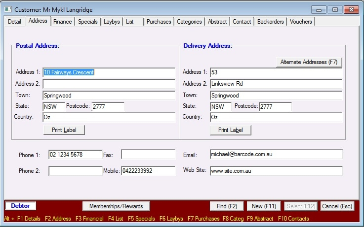
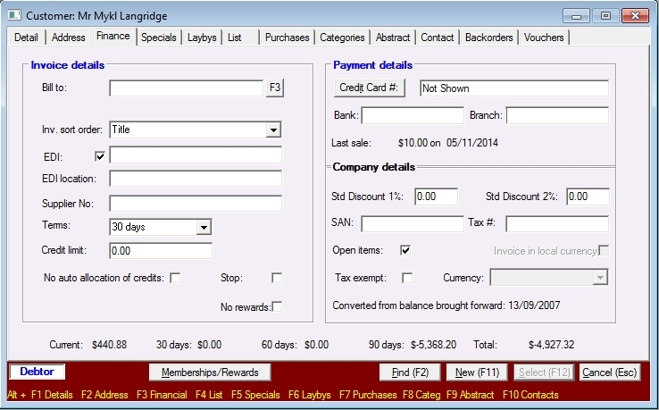

This will allow the recipient of system generated e-mails to identify you as the sender.
e-Comms will automatically dispatch advices according to Customer and Supplier setup.

In Bookscan
|
e-Comms: Configuring Customers
|
Previous Top Next |

